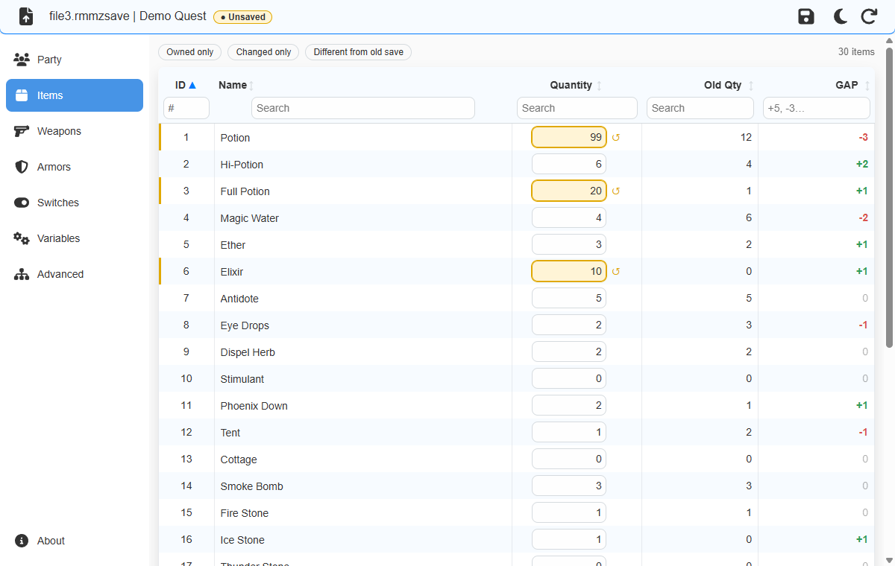
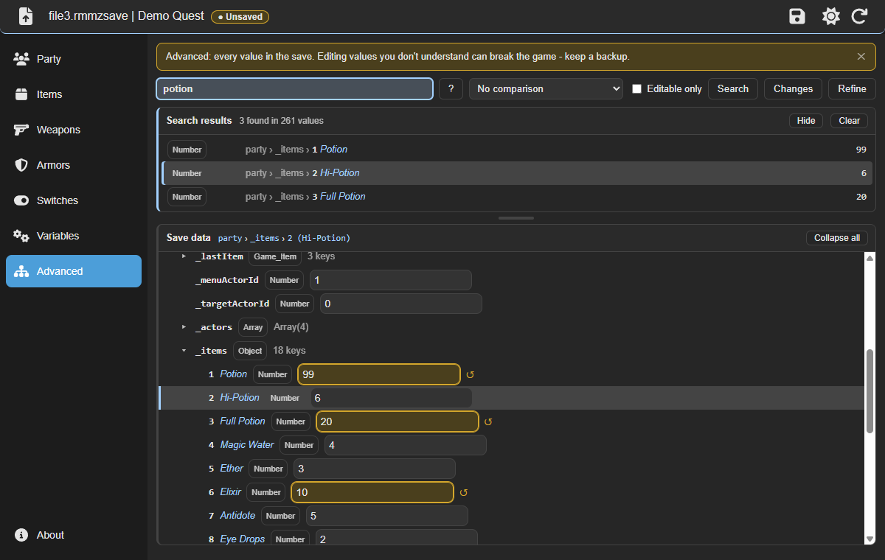

RPG Save Editor
A free, open-source save editor for RPG Maker MV, MZ, VX Ace, VX, XP and Ren'Py games. Change gold, items, weapons, armors, party stats, switches and variables, or any other value in the save. Unlike online save editors, nothing is uploaded: it runs offline on your Windows PC.
Windows 10 or 11 (64-bit) · Free and open source (Apache 2.0) · Updates itself

Features
- Party: gold, HP, MP, TP, level, EXP and bonus stats of every character.
- Items, weapons and armors with their names read from the game's database.
- Switches and variables by name: unlock story events or change counters.
- Ren'Py variables: money, affection points, flags and names, with their type kept.
- Advanced tab: every value in the save as a searchable tree, for games whose plugins keep data in their own places.
- Find unknown values like Cheat Engine: search for values that changed, increased or decreased between two saves.
- Safe for your saves: everything you don't edit is kept as is, and values keep their type.
- Reads encrypted RPG Maker archives (
Game.rgssad,Game.rgss2a,Game.rgss3a), light and dark themes, drag & drop.

Supported games and save files
| Engine | Save folder | Files |
|---|---|---|
| RPG Maker MZ | save/ | file1.rmmzsave |
| RPG Maker MV | www/save/ | file1.rpgsave |
| RPG Maker VX Ace | game folder, next to Game.exe | Save01.rvdata2 |
| RPG Maker VX | game folder, next to Game.exe | Save1.rvdata |
| RPG Maker XP | game folder, next to Game.exe | Save1.rxdata |
| Ren'Py 7 and 8 | game/saves/ and %APPDATA%\RenPy\<game> | 1-1-LT1.save |
How to edit a save
- Back up your save file.
- Open it in RPG Save Editor (
Ctrl+O, or drag it onto the window). - Change the values you want; changed values are highlighted.
- Press
Ctrl+Sand load the save in the game.
Full guide, including Ren'Py notes: README on GitHub.